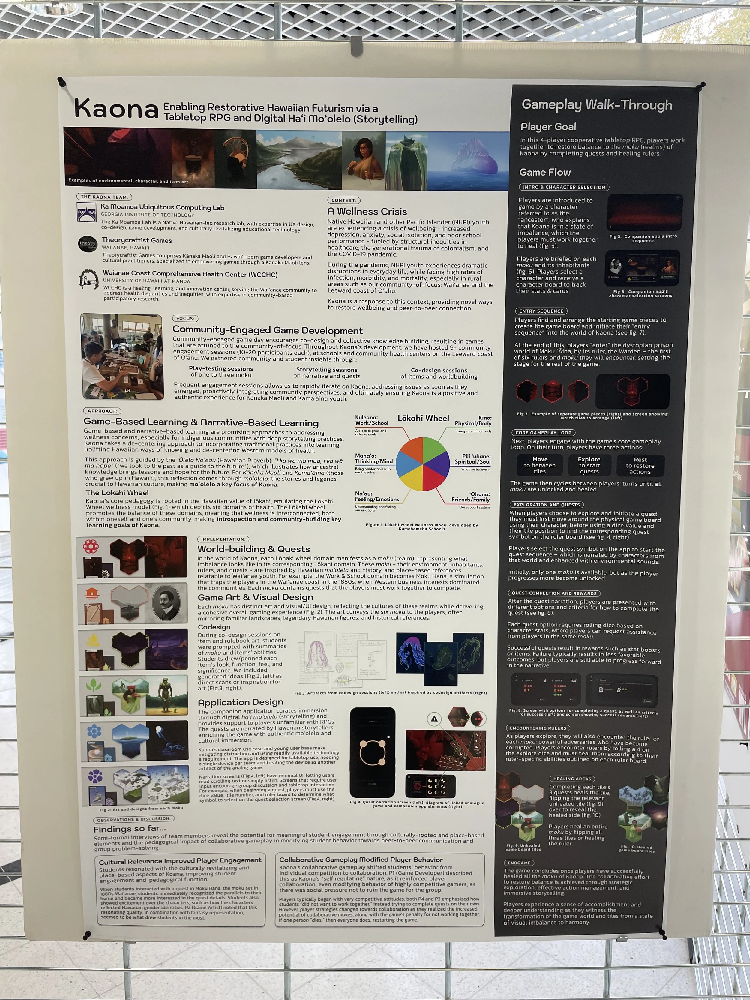
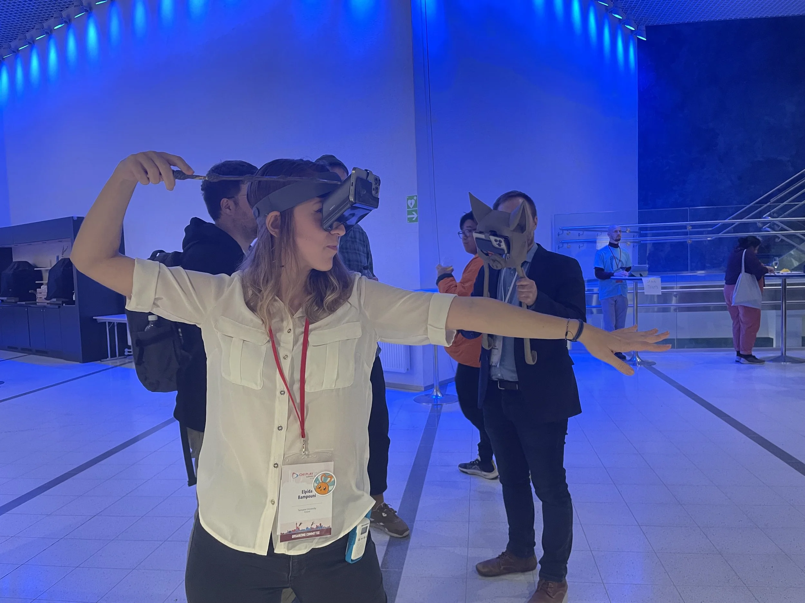
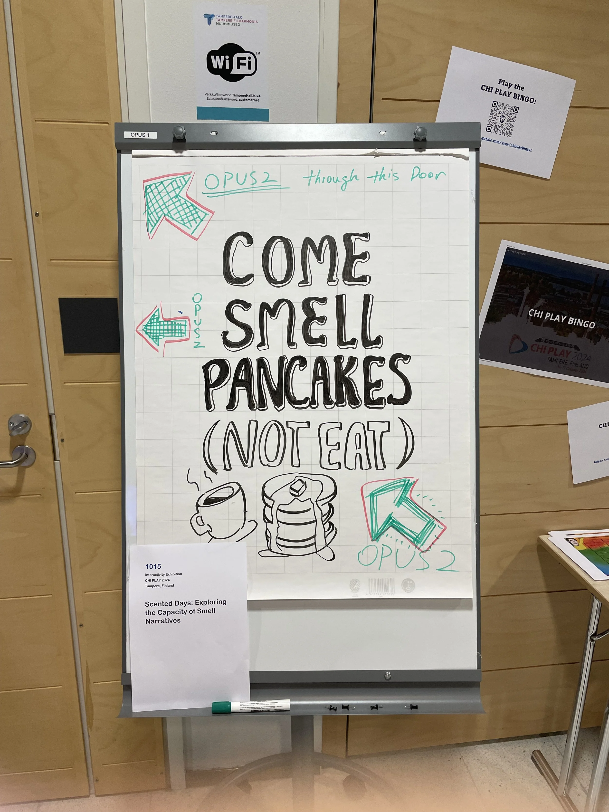
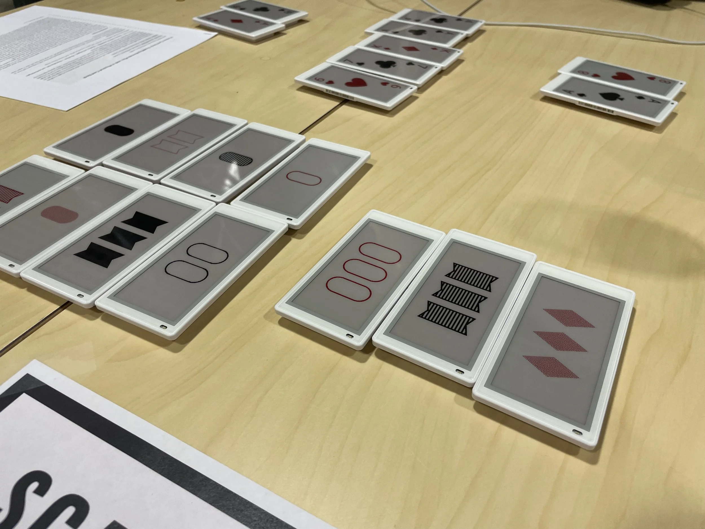
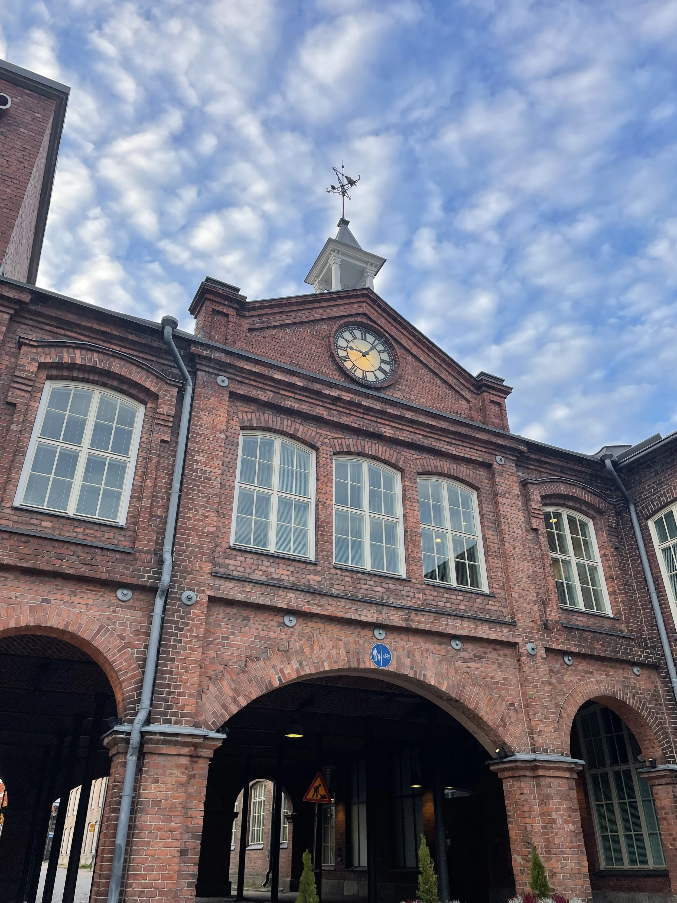
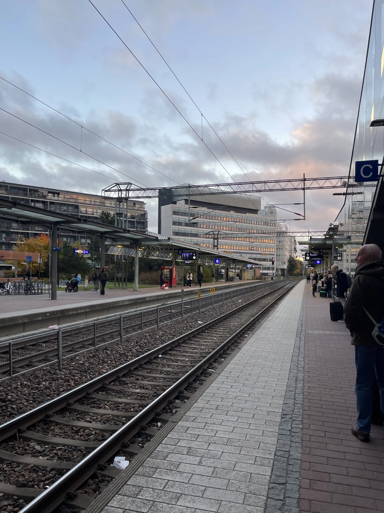

CHI Play 2024




I had the incredible opportunity to attend The Annual Symposium on Computer-Human Interaction in Play (CHI PLAY) 2024 in Tampere, Finland, where I presented our Work-in-Progress paper: Enabling Restorative Hawaiian Futurism via a Tabletop Role-Playing Game and Digital Ha‘i Mo‘olelo.
Our paper presents Kaona, a tabletop role-playing game (RPG) and digital storyteller, designed to foster youth well-being from a Native Hawaiian perspective. Players problem-solve, self-reflect, and build community as they navigate complex quests inspired by local lived experiences and Hawaiian mo‘olelo (stories and legends). Our paper details Kaona's development, iterative playtesting, and our initial observations. You can check out our paper here.
The presentation video (hosted on YouTube) and embedded talk recordings from the original post aren't image files, so they weren't pulled into this migration — link out to them directly if you'd like to keep them embedded.
One of the highlights of the conference was hearing about the amazing projects happening, so I also wanted to share some of the interesting, relevant, or just plain cool work that others presented:
From Imagination to Innovation: Using Participatory Design Fiction to Envision the Future of Accessible Gaming Wearables for Players with Upper Limb Motor Disabilities
This project showed how speculative design can be a tool for creating technology that is truly authentic to the experiences of disabled players. The team used participatory design fiction to help envision future gaming wearables that would better serve players with upper limb motor disabilities. The way they engaged the community in co-creating these futures was super inspiring.

Storytelling Games for General Anxiety: Clinician Perspectives on Walking Simulator Games as Intervention
This presentation was an interesting parallel to our own paper, given its focus on how games can contribute to well-being. In this case, clinical experts evaluated storytelling games, particularly walking simulators, for their potential to help manage general anxiety. It's fascinating to see how game design elements and narrative experiences can become tools for mental health interventions.
How Boardgame Players Imagine Interacting with Technology
Another fantastic speculative design project, this study had boardgame players participating in futuring activities to come up with concepts for hybrid analog-digital games. The focus was on integrating physical computing into games, and it got me thinking about the future of how we blend physical and digital play.

Changing Climate Change Mental Models Through Game-Based Learning: A Controlled Experiment Involving Cognitive Mapping
This study stood out to me because of its innovative use of pre- and post-play mind maps to assess how players' understanding of climate change evolved through gameplay. The mind maps literally visualized the mental connections that the game helped players form, which is such a cool way to evaluate complex learning outcomes.
Investigating the Implementation and Effects of Personalized Gamification in Education
This study challenged the one-size-fits-all approach to gamification in education, proposing instead a system of personalized gamification that aligns with different player types. It was a great reminder that effective educational tools need to be attuned to individual experiences to truly engage learners.

Mod Installation as Reclaiming Representational Diversity: The Role of Aesthetic Agency in Stardew Valley
I loved this talk on how players are using mods to reshape games like Stardew Valley to be more representative of gender identity, sexuality, race, and disability. It was a powerful reminder of the ways in which players can reclaim and diversify game spaces through modification.
And of course, beyond the exciting talks and demos, I had the chance to experience Tampere—a beautiful city with its own unique charm. I also tried salted licorice for the first time, which was… interesting!


Overall, CHI Play 2024 was an incredible opportunity to present our work and dive into the cutting-edge research shaping the future of games. I left feeling inspired and energized by all the creative ways games can intersect with education, health, and social change. I can't wait to take what I've learned and apply it to our ongoing projects!